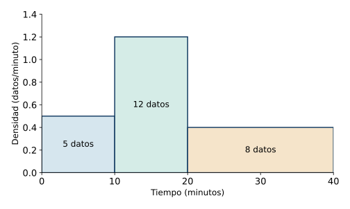
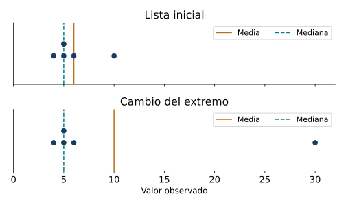
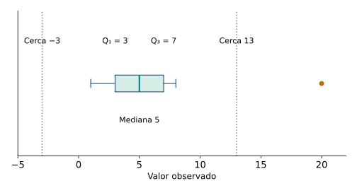
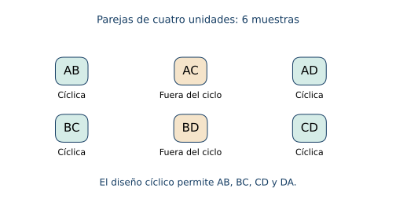

Combinatoria, muestreo y descripción de datos
← Composición, inversión y modelización funcional · Índice del libro · Siguiente →
Dos cursos informan que sus estudiantes tardan, en promedio, veinte minutos en llegar al colegio. En uno casi todos viven a una distancia semejante; en el otro conviven viajes de cinco minutos y viajes de más de una hora. ¿Qué información falta para comparar esas experiencias? Antes de calcular conviene conocer a quiénes se preguntó, cómo se registró el tiempo y qué rasgos del conjunto conserva cada resumen.
Una colección de datos permite estudiar valores frecuentes, posiciones centrales y diferencias entre observaciones. Para obtenerla debemos elegir unidades y un procedimiento de selección. Contar las selecciones posibles ayuda a describir ese procedimiento con precisión. El capítulo recorrerá ese trayecto: observar y organizar, resumir y comparar, contar posibilidades y examinar el alcance de una muestra. Todos los datos numéricos de los problemas son construidos para el estudio.
De las personas a los registros
La población es el conjunto de unidades al que se refiere una investigación. La unidad estadística es cada entidad sobre la que se observa una característica: una persona, una vivienda, una pieza producida o un trayecto, según la pregunta. Una muestra es un subconjunto de unidades seleccionado de esa población. Un censo procura observar todas sus unidades.
Una variable asigna a cada unidad un valor de la característica estudiada. Una variable cualitativa registra categorías; sus categorías pueden tener un orden propio, como los niveles de satisfacción, o una organización nominal, como el medio de transporte. Una variable cuantitativa registra cantidades. Los recuentos suelen tomar valores discretos y las mediciones se representan mediante una escala continua, aunque el instrumento las redondee. El dato observado reúne valor, unidad de medida y contexto de registro. Si se mide varias veces a una misma persona, debe precisarse si la unidad de análisis es la persona o cada medición.
Para una muestra de \(n\geq1\) registros, la frecuencia absoluta \(f_j\) de una categoría o clase cuenta cuántos registros pertenecen a ella. La frecuencia relativa es \(h_j=f_j/n\). Cuando las clases están ordenadas, la frecuencia acumulada \(F_j=f_1+\cdots+f_j\) cuenta los registros hasta la clase \(j\). Los intervalos de una agrupación deben cubrir los datos y asignar cada observación a una única clase; por ejemplo, \([0,10)\) incluye cero y deja diez para la clase siguiente.
Propiedades de las frecuencias
| Propiedad | Hipótesis y alcance |
|---|---|
| Total absoluto | Para clases exhaustivas y disjuntas, \(\sum_j f_j=n\). |
| Total relativo | \(h_j=f_j/n\geq0\) y \(\sum_jh_j=1\); los porcentajes exactos suman cien por ciento. |
| Acumulación | En clases ordenadas, \(F_j=\sum_{i\leq j}f_i\) es creciente en sentido amplio y termina en \(n\). |
| Recuperar frecuencias | \(f_1=F_1\) y \(f_j=F_j-F_{j-1}\) para \(j\geq2\). |
Pruebas. Véase «Partición de registros y frecuencias» en el apéndice de demostraciones.
Problema 1. Qué se observa y a quién
Se quiere describir el tiempo de viaje habitual de los 240 estudiantes de un establecimiento. Se eligen 30 estudiantes y se registra, para cada uno, el tiempo de su viaje del lunes en minutos enteros. Identificar población, muestra, unidad y variable; precisar el alcance de la observación.
Solución. La población objetivo son los 240 estudiantes, la muestra contiene 30 y la unidad estadística es cada estudiante. La variable observada es el tiempo del viaje del lunes, medido en minutos y redondeado al entero. El tamaño muestral es 30; la amplitud de los tiempos requeriría conocer sus valores extremos. Para estudiar un tiempo habitual convendría registrar varios días o formular una pregunta que lo defina: una única observación del lunes describe ese viaje y puede reflejar condiciones particulares de ese día. El procedimiento de selección de los 30 estudiantes también forma parte de la información necesaria.
Problema 2. Una tabla de recuentos
Los números de libros leídos por diez estudiantes durante un mes son \(0,1,1,2,2,2,3,3,4,4\). Organizar frecuencias y hallar la proporción que leyó al menos tres libros.
Solución. Para los valores \(0,1,2,3,4\), las frecuencias absolutas son \(1,2,3,2,2\) y las relativas son \(1/10,2/10,3/10,2/10,2/10\). Suman diez y uno, respectivamente. Los valores tres y cuatro reúnen cuatro estudiantes, de modo que la proporción buscada es \(4/10=40\%\). La tabla representa los diez registros del grupo; extender ese porcentaje a todos los estudiantes del establecimiento exigiría estudiar cómo se eligieron estos diez.
Problema 3. Leer una acumulación
Las frecuencias acumuladas para las clases de tiempo \([0,10)\), \([10,20)\) y \([20,40]\) son \(5,17,25\). Recuperar las frecuencias simples y calcular el porcentaje de tiempos inferiores a veinte minutos.
Solución. Las frecuencias simples son \(5\), \(17-5=12\) y \(25-17=8\). El total es 25. Las dos primeras clases reúnen los tiempos estrictamente menores que veinte, por lo que el porcentaje es \(17/25=68\%\). Una observación de veinte pertenece a la tercera clase, cuyo extremo inferior está incluido. Las diferencias sucesivas son no negativas, como exige una acumulación válida.
Dar forma visible a los datos
Un gráfico de barras representa categorías mediante alturas o longitudes proporcionales a sus frecuencias. El orden de presentación puede elegirse para facilitar una comparación; cuando las categorías tienen un orden sustantivo conviene respetarlo. Un gráfico de líneas enlaza observaciones según una secuencia, como el tiempo, y comunica también esa continuidad o evolución. Los ejes, sus unidades y la escala hacen explícita la relación entre números y dibujo.
Para representar clases numéricas mediante un histograma, cada intervalo de clase será la base de un rectángulo. Queremos que el área muestre cuántos registros contiene, así que debemos repartir la frecuencia \(f_j\) sobre una base de amplitud \(a_j>0\): la altura será \(f_j/a_j\). Al multiplicar altura por base recuperamos la frecuencia. Si usamos \(h_j/a_j\), el área representará la frecuencia relativa. Cuando todas las bases tienen la misma amplitud, las alturas permiten comparar directamente los recuentos; con bases distintas, la división por la amplitud conserva el significado de las áreas.

Propiedades de las representaciones
| Propiedad | Hipótesis y alcance |
|---|---|
| Barras y frecuencias | Con escala común y base cero, la altura de cada barra es proporcional a su frecuencia. |
| Área del histograma | Para amplitud \(a_j>0\) y altura \(f_j/a_j\), el área del rectángulo es \(f_j\). |
| Densidad relativa | Con altura \(h_j/a_j\), el área total del histograma es uno. |
Pruebas. Véase «Escalas gráficas y áreas de histogramas» en el apéndice de demostraciones.
Problema 4. Elegir una representación
En un grupo de veinte estudiantes, doce viajan en bus, cinco caminan y tres van en bicicleta. Elegir un gráfico y explicar qué debe mostrar su escala.
Solución. Un gráfico de barras permite comparar las tres categorías. Puede usar frecuencias absolutas \(12,5,3\) o porcentajes \(60\%,25\%,15\%\), con eje claramente rotulado y origen cero para representar esas magnitudes mediante longitudes. Las categorías son nominales y el orden elegido sólo organiza la lectura. Unir sus alturas con segmentos sugeriría una evolución entre categorías que la encuesta no establece. Las proporciones suman cien por ciento porque cada estudiante se asignó a un único medio de transporte principal.
Problema 5. Una clase ancha con más observaciones
Para tiempos en minutos, las clases \([0,10)\), \([10,20)\) y \([20,40]\) contienen \(5,12,8\) observaciones. Hallar las alturas de un histograma de frecuencia por área e identificar la clase más concentrada por unidad de tiempo.
Solución. Las amplitudes son \(10,10,20\) minutos. Las alturas son \(5/10=0{,}5\), \(12/10=1{,}2\) y \(8/20=0{,}4\) observaciones por minuto. Sus áreas son \(5,12,8\), que recuperan los recuentos. La clase \([10,20)\) tiene la mayor densidad. La última clase contiene ocho observaciones, pero distribuye ese total sobre un intervalo dos veces más ancho que el primero. Las alturas relativas serían estas mismas alturas divididas por 25 y sus áreas sumarían uno.
Qué conserva un valor central
La media aritmética de \(n\) valores reales \(x_1,\ldots,x_n\) es \(\bar x=(x_1+\cdots+x_n)/n\). Reparte la suma total en partes iguales. Si los valores se presentan con frecuencias \(f_j\), puede calcularse mediante \(\bar x=\sum_j f_jv_j/n\), donde \(v_j\) es cada valor distinto. Esta fórmula usa valores observados exactos; reemplazar una clase de un intervalo por su punto medio produce una estimación que requiere declararse.
Para hallar la mediana se ordenan los datos \(x_{(1)}\leq\cdots\leq x_{(n)}\). Si \(n\) es impar se toma el valor de posición \((n+1)/2\); si es par se promedian las posiciones \(n/2\) y \(n/2+1\). La mediana elegida deja al menos la mitad de las observaciones a cada lado, contando las igualdades. La moda es cada valor o categoría con frecuencia máxima; puede haber varias modas. Conocer el centro facilita la comparación y conviene acompañarlo con la forma y la dispersión de los datos.

Propiedades de los centros
| Propiedad | Hipótesis y alcance |
|---|---|
| Balance de la media | \(\sum_i(x_i-\bar x)=0\). |
| Media ponderada | Para pesos \(w_j\geq0\) de suma positiva, \(\bar x_w=\sum_j w_jx_j/\sum_jw_j\). |
| Reunir grupos | Si los grupos disjuntos tienen tamaños \(n_j>0\) y medias \(m_j\), la media conjunta es \(\sum_jn_jm_j/\sum_jn_j\). |
| Posición mediana | La mediana definida por orden deja al menos \(n/2\) observaciones menores o iguales y al menos \(n/2\) mayores o iguales. |
| Moda | Las modas corresponden a las frecuencias máximas; su interpretación conserva el tipo de variable y la agrupación usada. |
Pruebas. Véase «Media, ponderaciones y posiciones centrales» en el apéndice de demostraciones.
Problema 6. Calcular desde frecuencias
Calcular la media del número de libros del problema 2 y comprobar el balance respecto de ella.
Solución. La suma es \(0\cdot1+1\cdot2+2\cdot3+3\cdot2+4\cdot2=22\), así que \(\bar x=22/10=2{,}2\) libros por estudiante. La suma de las diferencias, con sus frecuencias, es \(1(0-2{,}2)+2(1-2{,}2)+3(2-2{,}2)+2(3-2{,}2)+2(4-2{,}2)=0\). La media admite un valor fraccionario aunque cada recuento individual sea entero: expresa un reparto del total de libros entre los diez estudiantes.
Problema 7. Centro y valor extremo
Comparar media, mediana y moda en \(4,5,5,6,10\) y en \(4,5,5,6,30\).
Solución. En el primer conjunto la suma es 30 y la media vale 6; en el segundo la suma es 50 y la media vale 10. Ambos conjuntos están ordenados, tienen cinco datos y conservan el tercer valor \(5\), que es su mediana. El valor \(5\) aparece dos veces y cada otro valor una vez, por lo que también es la moda de ambos. El cambio de veinte unidades en un dato aumenta la media en \(20/5=4\) y conserva las posiciones centrales de este ejemplo. El efecto sobre una mediana depende de las posiciones que cambien.
Problema 8. Ponderar una calificación
Una calificación se obtiene con tres resultados \(5,6,4\) y ponderaciones \(20\%,30\%,50\%\). Calcularla e interpretar las ponderaciones.
Solución. La suma ponderada es \(0{,}2\cdot5+0{,}3\cdot6+0{,}5\cdot4=4{,}8\). Los pesos suman uno y representan la fracción de la calificación atribuida a cada evaluación. Como son no negativos, el resultado está entre el mínimo 4 y el máximo 6. Usar la media simple daría 5 y correspondería a otro sistema de pesos, con igual aporte de las tres evaluaciones.
Problema 9. Reunir dos cursos
Un curso de 20 estudiantes tiene media de viaje de 15 minutos; otro de 30 tiene media de 25 minutos. Hallar la media conjunta.
Solución. Las sumas de tiempos son \(20\cdot15=300\) y \(30\cdot25=750\) minutos. Al reunir los 50 estudiantes, la media es \((300+750)/50=21\) minutos. Promediar las dos medias con igual peso produciría 20 y otorgaría el mismo aporte a grupos de tamaños diferentes. El cálculo correcto pondera cada media por la cantidad de observaciones que resume.
Posiciones, cuartiles y cajas
Un cuantil sitúa un valor dentro de una distribución ordenada. Para que los resultados sean reproducibles declararemos la convención usada. En este capítulo los cuantiles interpolados de una lista de \(n\geq1\) datos ordenados se calculan con
\[h=1+(n-1)p,\qquad 0\leq p\leq1.\]
Si \(h\) es entero, se toma \(Q(p)=x_{(h)}\). Si \(j<h<j+1\) y \(d=h-j\), se interpola mediante \(Q(p)=(1-d)x_{(j)}+dx_{(j+1)}\). Los extremos dan mínimo y máximo; para \(n=1\) todos los cuantiles valen el único dato. El percentil \(100p\) corresponde a \(Q(p)\); los cuartiles son \(Q_1=Q(1/4)\), \(Q_2=Q(1/2)\) y \(Q_3=Q(3/4)\). Esta convención hace coincidir \(Q_2\) con la mediana anterior.
Otra convención, la de rango próximo superior, elige \(x_{(\lceil np\rceil)}\) para \(0<p\leq1\), donde \(\lceil u\rceil\) es el menor entero mayor o igual que \(u\). Las dos reglas pueden producir valores distintos en una lista finita. Un percentil interpolado describe la posición calculada por su regla; la proporción efectiva de datos inferiores a él se obtiene contando las observaciones, especialmente en muestras pequeñas o con empates.
El recorrido intercuartílico es \(RIC=Q_3-Q_1\). Un diagrama de caja representa la caja entre ambos cuartiles y marca la mediana. Usaremos bigotes hasta las observaciones extremas incluidas en las cercas \(Q_1-1{,}5RIC\) y \(Q_3+1{,}5RIC\), y dibujaremos separadamente las observaciones exteriores. La denominación «valor atípico» se refiere aquí a esa regla descriptiva; su interpretación requiere conocer el contexto y comprobar el registro.

Propiedades de los cuantiles declarados
| Propiedad | Hipótesis y alcance |
|---|---|
| Interpolación | Si \(h=j+d\), \(0<d<1\), \(Q(p)=(1-d)x_{(j)}+dx_{(j+1)}\) queda entre los datos vecinos. |
| Orden de cuantiles | Con la convención interpolada y datos ordenados, \(p\leq q\) implica \(Q(p)\leq Q(q)\). |
| Cuartil central | \(Q(1/2)\) coincide con la mediana definida por las posiciones centrales. |
| Caja y cercas | \(RIC=Q_3-Q_1\geq0\) y las cercas \(Q_1-1{,}5RIC\), \(Q_3+1{,}5RIC\) fijan la regla de clasificación adoptada. |
Pruebas. Véase «Cuantiles interpolados y convención de caja» en el apéndice de demostraciones.
Problema 10. Un percentil entre posiciones
Los datos ordenados son \(2,4,6,8,10,12\). Calcular el percentil 30 mediante la convención interpolada.
Solución. Con \(n=6\) y \(p=0{,}30\), se obtiene \(h=1+5\cdot0{,}30=2{,}5\). Las posiciones vecinas contienen 4 y 6. La interpolación con \(d=0{,}5\) da \(Q(0{,}30)=5\). Hay dos observaciones menores o iguales que 5, es decir, \(2/6\) del conjunto. El percentil calculado conserva la posición interpolada; el recuento efectivo se expresa con esa fracción.
Problema 11. Cuartiles y un dato exterior
Para \(1,2,3,4,5,6,7,8,20\), calcular cuartiles, recorrido intercuartílico y bigotes con la regla declarada.
Solución. Como \(n=9\), las posiciones son \(h_1=3\), \(h_2=5\) y \(h_3=7\). Por tanto \(Q_1=3\), mediana \(5\), \(Q_3=7\) y \(RIC=4\). Las cercas valen \(3-6=-3\) y \(7+6=13\). Los bigotes llegan a las observaciones 1 y 8. El valor 20 queda fuera de la cerca superior y se representa aparte. El máximo de la lista sigue siendo 20, aunque el bigote superior termine en 8.
Problema 12. Dos convenciones sobre cuatro datos
Calcular el percentil 90 de \(0,10,20,100\) mediante interpolación y mediante rango próximo superior; interpretar los recuentos.
Solución. La interpolación usa \(h=1+3\cdot0{,}9=3{,}7\) y da \(0{,}3\cdot20+0{,}7\cdot100=76\). El rango próximo superior usa \(\lceil4\cdot0{,}9\rceil=4\) y da 100. En la lista hay tres de cuatro valores menores o iguales que 76, y cuatro de cuatro menores o iguales que 100. Ambas reglas son explícitas y producen resultados reproducibles; indicar la convención permite comprender la diferencia. La interpolación por posiciones no impone que exactamente el noventa por ciento de cuatro observaciones quede bajo el valor obtenido.
Cuánto se separan las observaciones
El rango es la diferencia entre máximo y mínimo. La varianza descriptiva de una lista completa de \(n\geq1\) datos se define por
\[v=\frac1n\sum_{i=1}^n(x_i-\bar x)^2.\]
La desviación típica descriptiva es \(\sigma=\sqrt v\). Si los datos representan toda la población de interés, estas son la varianza y desviación poblacionales. Para una muestra de \(n\geq2\) observaciones es frecuente usar también la varianza muestral con divisor \(n-1\),
\[s^2=\frac1{n-1}\sum_{i=1}^n(x_i-\bar x)^2.\]
Su raíz es \(s\). La elección del divisor debe declararse: \(v\) describe la dispersión de la lista usando su tamaño; \(s^2\) es la convención de uso inferencial que retomará el estudio de probabilidad. Aquí compararemos ambas fórmulas algebraicamente y reservaremos sus propiedades probabilísticas para ese desarrollo.
La varianza se expresa en el cuadrado de la unidad de los datos y la desviación en su unidad original. Una traslación común cambia el centro y conserva todas las diferencias respecto de él. Un cambio de escala multiplica esas diferencias y, por tanto, modifica la dispersión de una manera que puede calcularse exactamente.
Propiedades de la dispersión
| Propiedad | Hipótesis y alcance |
|---|---|
| Positividad | \(v\geq0\) y \(v=0\) exactamente cuando todos los datos coinciden. |
| Cálculo equivalente | \(v=(\sum_i x_i^2)/n-\bar x^2\); al calcular con redondeos, conviene controlar la pérdida de precisión. |
| Cambio afín | Para \(y_i=ax_i+b\), \(\bar y=a\bar x+b\), \(v_y=a^2v_x\) y \(\sigma_y=\lvert a\rvert \sigma_x\). |
| Dos divisores | Si \(n\geq2\), \(s^2=nv/(n-1)\); para una lista de un solo dato \(v=0\) y \(s^2\) queda sin definir. |
| Unidades | Si los datos se miden en una unidad \(U\), \(v\) y \(s^2\) se expresan en \(U^2\) y sus raíces en \(U\). |
Pruebas. Véase «Dispersión, divisores y cambios de escala» en el apéndice de demostraciones.
Problema 13. Dispersión de una lista completa
Los tiempos de tres trayectos son \(2,4,6\) minutos. Calcular media, rango, varianza y desviación típica descriptivas.
Solución. La media es 4 minutos y el rango es \(6-2=4\) minutos. Las diferencias son \(-2,0,2\), con cuadrados \(4,0,4\). Así \(v=8/3\) minutos cuadrados y \(\sigma=\sqrt{8/3}\) minutos. La aproximación \(1{,}63\) minutos tiene error menor que \(0{,}005\) minutos, porque \(1{,}625^2<8/3<1{,}635^2\). La fórmula alternativa da \((4+16+36)/3-16=8/3\) y comprueba la varianza.
Problema 14. Declarar el divisor
Para la muestra \(1,3,5,7\), calcular la varianza descriptiva de la lista y la varianza muestral con divisor \(n-1\).
Solución. La media es 4 y la suma de cuadrados respecto de ella es \(9+1+1+9=20\). Con divisor cuatro se obtiene \(v=5\). Con divisor tres se obtiene \(s^2=20/3\). La relación \(s^2=4v/3\) confirma el resultado. Las desviaciones correspondientes son \(\sqrt5\) y \(\sqrt{20/3}\). Ambas fórmulas usan las mismas cuatro observaciones; la diferencia procede de la definición elegida y debe acompañar cualquier comparación con otro grupo.
Problema 15. Convertir la escala de medición
Una lista de temperaturas Celsius tiene media \(20\) y varianza descriptiva \(9\). Se transforma mediante \(F=1{,}8C+32\). Hallar media, varianza y desviación típica en la escala Fahrenheit.
Solución. La media pasa a \(1{,}8\cdot20+32=68\) grados Fahrenheit. La varianza se multiplica por \(1{,}8^2\), de modo que vale \(29{,}16\) grados Fahrenheit cuadrados. La desviación inicial es 3 grados Celsius y la nueva es \(1{,}8\cdot3=5{,}4\) grados Fahrenheit. El desplazamiento 32 modifica el origen de la escala; las diferencias se multiplican por \(1{,}8\). Las unidades de los resultados distinguen varianza y desviación.
Problema 16. Igual media e igual rango
Comparar las listas \(A=(0,2,2,4)\) y \(B=(0,0,4,4)\) mediante media, rango y varianza descriptiva.
Solución. Ambas suman ocho, tienen media dos y rango cuatro. En \(A\), los cuadrados de las diferencias son \(4,0,0,4\) y la varianza vale \(8/4=2\). En \(B\) son \(4,4,4,4\) y la varianza vale \(16/4=4\). Sus desviaciones son \(\sqrt2\) y 2, respectivamente. La segunda lista concentra todos sus datos en los extremos, mientras que la primera sitúa dos en el centro. La varianza distingue así dos distribuciones que tienen la misma media y el mismo rango.
Contar la estructura de las elecciones
Contar casos exige describir qué constituye un resultado distinto. La regla de la suma reúne alternativas disjuntas: si una elección pertenece a una de dos clases de tamaños \(a\) y \(b\), el total es \(a+b\). Si se superponen, hay que descontar las elecciones contadas en ambas. La regla del producto organiza etapas: si cada una de \(a\) primeras elecciones admite exactamente \(b\) segundas elecciones, existen \(ab\) parejas posibles. Cuando la cantidad de continuaciones varía, se suman los recuentos de cada primera elección.
Una variación ordenada de longitud \(k\) elige y ordena \(k\) elementos de un conjunto de \(n\) elementos distintos. Con repetición, cada posición admite los \(n\) elementos y se obtienen \(n^k\) secuencias. Sin repetición, para \(0\leq k\leq n\), las cantidades disponibles son \(n,n-1,\ldots,n-k+1\) y su producto vale \(n!/(n-k)!\). El factorial \(n!\) es el producto \(1\cdot2\cdots n\) para \(n\geq1\), con \(0!=1\). Una permutación ordena todos los elementos: corresponde a \(k=n\).
Una combinación de tamaño \(k\) es un subconjunto de \(k\) elementos de un conjunto de \(n\) elementos distintos. Podemos obtenerlo comenzando por una selección ordenada, pero cada subconjunto aparece entonces una vez por cada orden de sus \(k\) elementos: exactamente \(k!\) veces. Dividir el número de selecciones ordenadas entre esa cantidad de representaciones da
\[\binom nk=\frac{n!}{k!(n-k)!},\qquad 0\leq k\leq n.\]
Si se ordenan objetos con repeticiones indistinguibles de multiplicidades \(m_1,\ldots,m_r\), cuya suma es \(n\), se divide \(n!\) por \(m_1!\cdots m_r!\). Estas divisiones se justifican al identificar cuántos registros ordenados representan el mismo resultado final.

Propiedades del conteo
| Propiedad | Hipótesis y alcance |
|---|---|
| Suma disjunta | Si \(A\cap B=\varnothing\), $AB=A+B$. |
| Producto por etapas | Si cada primera elección tiene el mismo número \(b\) de continuaciones, \(a\) primeras elecciones generan \(ab\) pares. |
| Variaciones | Para \(n\geq1\), con repetición hay \(n^k\) secuencias; sin repetición hay \(n!/(n-k)!\), para \(0\leq k\leq n\). |
| Permutaciones | \(n\) elementos distintos admiten \(n!\) órdenes; multiplicidades indistinguibles \(m_j\) dan \(n!/\prod_jm_j!\). |
| Combinaciones | Los subconjuntos de tamaño \(k\) se cuentan con \(\binom nk=n!/[k!(n-k)!]\). |
| Complementos | \(\binom nk=\binom n{n-k}\) porque elegir un subconjunto determina su complemento. |
Pruebas. Véase «Suma, producto y orden en el conteo» en el apéndice de demostraciones.
Problema 17. Alternativas y etapas
Un taller ofrece cuatro actividades individuales y tres actividades en parejas. Cada participante elige una actividad. Para la actividad elegida puede escoger entre dos horarios. ¿Cuántas inscripciones diferentes hay?
Solución. Las actividades individuales y en parejas son dos clases disjuntas de alternativas, con total \(4+3=7\). Cada una admite dos horarios, así que hay \(7\cdot2=14\) pares actividad-horario. Se supone que todos los horarios están disponibles para las siete actividades. Si una actividad tuviera un solo horario, habría que contar sus continuaciones por separado; el total bajaría a 13. El conteo distingue elegir una alternativa de completar sus etapas.
Problema 18. Claves y cargos
Con cinco símbolos distintos, formar claves de tres posiciones permitiendo repetición. Comparar con la asignación de presidencia, secretaría y tesorería a tres personas distintas de un grupo de cinco.
Solución. Cada posición de la clave admite los cinco símbolos, de modo que hay \(5^3=125\) claves. Para los cargos hay cinco elecciones para presidencia, cuatro para secretaría y tres para tesorería: \(5\cdot4\cdot3=60\). El orden de los cargos distingue resultados, pues intercambiar dos personas cambia sus funciones. La exigencia de personas distintas reduce las alternativas disponibles después de cada elección.
Problema 19. Letras que se repiten
Contar los arreglos distintos de las cinco letras de la palabra MAMAS, usando todas las letras.
Solución. Hay dos letras M, dos A y una S. Si se etiquetaran las copias como \(M_1,M_2,A_1,A_2,S\), habría \(5!=120\) órdenes. Cada arreglo visible se obtiene de \(2!\cdot2!=4\) órdenes etiquetados, porque pueden intercambiarse las dos M y las dos A dentro de sus posiciones. Por ello hay \(120/4=30\) arreglos visibles. La división tiene un factor constante para cada resultado y conserva exactamente una cuenta por arreglo distinto.
Problema 20. Comité y distribución de funciones
De ocho personas se eligen tres para un comité. Contar los comités y comparar con las elecciones en que esas tres personas reciben tres cargos diferentes.
Solución. Un comité es un subconjunto y se cuenta con \(\binom83=8\cdot7\cdot6/(3\cdot2\cdot1)=56\). Si se asignan tres cargos, cada comité admite \(3!=6\) distribuciones y se obtienen \(56\cdot6=336\), que también es \(8\cdot7\cdot6\). Elegir quiénes participan y decidir sus funciones son dos etapas distintas. Como comprobación, elegir un comité de tres equivale a elegir las cinco personas que quedan fuera: \(\binom83=\binom85\).
Problema 21. Dos mecanismos para seleccionar parejas
Una población tiene cuatro unidades \(A,B,C,D\). Enumerar las muestras de tamaño dos. Comparar seleccionar entre todas ellas con igual oportunidad y seleccionar sólo entre \(AB,BC,CD,DA\) con igual oportunidad.
Solución. Las seis muestras son \(AB,AC,AD,BC,BD,CD\), en acuerdo con \(\binom42=6\). La primera selección permite las seis y constituye una muestra aleatoria simple de tamaño dos. La segunda permite cuatro parejas; cada unidad aparece en dos de las cuatro, así que todas tienen la misma oportunidad individual de inclusión. Sin embargo, las parejas \(AC\) y \(BD\) quedan excluidas. La igualdad de oportunidades individuales es compatible con diseños que generan conjuntos de muestras diferentes. Para describir el mecanismo completo debe conocerse qué subconjuntos puede producir.
Seleccionar una muestra y explicar su alcance
El marco de muestreo es la lista o procedimiento que permite acceder a las unidades de la población. Una muestra aleatoria simple de tamaño fijo \(k\) se elige dando la misma oportunidad a cada subconjunto de ese tamaño. Un muestreo estratificado separa la población en grupos disjuntos relevantes para la investigación y selecciona unidades dentro de cada grupo mediante un procedimiento declarado. El diseño debe registrar cobertura del marco, selección, respuesta y tratamiento de los datos faltantes.
El sesgo de selección aparece cuando el mecanismo favorece sistemáticamente ciertas unidades o tipos de respuesta en relación con la característica estudiada. Una encuesta voluntaria puede atraer especialmente a quienes tienen una experiencia intensa; un formulario accesible sólo por internet puede dejar fuera a parte de la población. Aumentar el número de respuestas dentro del mismo mecanismo conserva sus condiciones de acceso. El alcance de la generalización depende del diseño y de supuestos que deben examinarse, además del tamaño obtenido.
Para reunir los estratos podemos recuperar el total que aporta cada uno: su media multiplicada por su tamaño. Sumar esos totales y dividir por la población completa produce la media conjunta, con los pesos poblacionales de los grupos. El cálculo es exacto cuando conocemos sus verdaderas medias; si las sustituimos por medias muestrales, obtenemos una estimación que conserva la incertidumbre y las condiciones de selección de esas muestras. Conocer el peso de un estrato permite combinar su información, y estudiar cómo se obtuvo esa información permite evaluar el alcance de la estimación.
Propiedades del muestreo y sus resúmenes
| Propiedad | Hipótesis y alcance |
|---|---|
| Espacio de muestras | Una población de \(N\) unidades distintas tiene \(\binom Nk\) muestras sin orden de tamaño fijo \(k\). |
| Cobertura del marco | Cada unidad accesible debe vincularse con la población objetivo; omisiones y duplicaciones requieren revisión del marco. |
| Peso por estrato | Si \(N_j\) y \(\mu_j\) son tamaño y media reales de cada estrato, \(\mu=\sum_jN_j\mu_j/\sum_jN_j\). Usar medias muestrales produce una estimación. |
| Información agrupada | Con frecuencias y clases se conocen recuentos por intervalo; una media por puntos medios es una estimación de los valores individuales. |
Pruebas. Véase «Marcos, estratos y datos agrupados» en el apéndice de demostraciones.
Problema 22. Muchas respuestas con cobertura parcial
Un municipio desea conocer el tiempo de acceso a sus oficinas de todos los vecinos adultos. Publica una encuesta en la aplicación municipal y recibe 2000 respuestas. ¿Qué debe examinarse antes de generalizar?
Solución. La población objetivo reúne a todos los vecinos adultos. El marco efectivo alcanza a quienes acceden a la aplicación, ven la encuesta y pueden responder. La participación voluntaria puede relacionarse con experiencias especialmente favorables o desfavorables. Deben examinarse cobertura por sectores y edades, duplicaciones, selección y falta de respuesta. Una mejora sería construir un marco que incluya los distintos sectores, seleccionar unidades con un procedimiento aleatorio declarado y ofrecer medios de respuesta accesibles, registrando quiénes responden. Las 2000 respuestas describen a quienes participaron; el diseño determina qué evidencia aportan sobre la población objetivo.
Problema 23. Recuperar el peso de cada estrato
Una población tiene 900 unidades en el estrato A y 100 en B. Se toman 50 de cada uno y sus medias observadas son 10 y 30. Comparar la media de los cien datos con la estimación ponderada por tamaños poblacionales.
Solución. La media de los cien datos es \((50\cdot10+50\cdot30)/100=20\). La estimación ponderada es \((900\cdot10+100\cdot30)/1000=12\). La primera resume la muestra equilibrada entre estratos; la segunda otorga a cada estrato su proporción poblacional. Si 10 y 30 fueran las medias verdaderas de cada estrato, 12 sería la media poblacional exacta. Con medias muestrales, 12 es una estimación cuya calidad depende de la selección y respuesta dentro de cada estrato.
Problema 24. Qué permite reconstruir un histograma
Las clases de tiempos \([0,10)\), \([10,20)\) y \([20,40]\) tienen frecuencias \(5,12,8\). Estimar la media con puntos medios, dar un intervalo garantizado para la media de esos 25 registros y decidir qué se sabe de su mediana y de la población.
Solución. Los puntos medios son \(5,15,30\). La media estimada es \((5\cdot5+12\cdot15+8\cdot30)/25=445/25=17{,}8\) minutos. Reemplazar cada dato por el extremo inferior de su clase da la cota \(\bar x\geq(5\cdot0+12\cdot10+8\cdot20)/25=11{,}2\). Usar los extremos superiores da \(\bar x< (5\cdot10+12\cdot20+8\cdot40)/25=24{,}4\); la desigualdad es estricta porque las dos primeras clases tienen extremos superiores excluidos y frecuencias positivas. La mediana es el dato de posición trece, que pertenece a \([10,20)\) porque las acumuladas son 5 y 17. Sus valores exactos se perdieron al agrupar. Estas conclusiones describen los registros; para generalizar a una población falta conocer cómo se obtuvieron.
Ejercicios para trabajar sin profesor
En cada ejercicio conserve las unidades, indique el divisor de la varianza y use la convención interpolada de cuantiles, salvo que se solicite otra. En el conteo, explique qué diferencia dos resultados. En las muestras, distinga la población objetivo de las unidades observadas.
1. Se estudia el gasto semanal de los 600 hogares de una localidad mediante 40 hogares elegidos de un listado. Identifique población, muestra, unidad y variable; explique qué información requiere el marco.
2. Para \(0,0,1,1,1,2,2,3\), construya frecuencias absolutas y relativas y calcule la proporción de valores al menos dos.
3. Tres clases ordenadas tienen frecuencias acumuladas \(4,11,20\). Recupere las simples y la frecuencia relativa acumulada hasta la segunda clase.
4. Una encuesta registra 9 preferencias por teatro, 6 por música y 5 por danza. Elija un gráfico y calcule porcentajes.
5. Un histograma tiene clases de amplitudes \(5,10,20\) y frecuencias \(10,15,20\). Halle alturas para representar frecuencias por áreas y densidades relativas.
6. Calcule la media de los datos del ejercicio 2 mediante frecuencias y compruebe el balance.
7. Compare media, mediana y moda en \(2,3,3,4,8\) y \(2,3,3,4,28\).
8. Los resultados \(4,5,7\) pesan \(25\%,25\%,50\%\). Halle la media ponderada y verifique que queda entre los extremos.
9. Un grupo de 12 datos tiene media 8 y otro de 18 datos tiene media 13. Halle la media conjunta.
10. Calcule el percentil 40 interpolado de \(1,3,5,7,9,11\) y cuente cuántos datos quedan bajo el resultado, incluyendo igualdades.
11. Para \(0,1,2,3,4,5,6,7,15\), halle cuartiles, cercas y bigotes con el método declarado.
12. Calcule el percentil 80 de \(0,5,10,50\) mediante interpolación y rango próximo superior. Compare los recuentos efectivos.
13. Para \(1,3,5\), calcule media, rango, varianza descriptiva y desviación típica exacta.
14. Para \(2,4,6,8\), calcule las varianzas con divisores \(n\) y \(n-1\) y sus desviaciones.
15. Una lista tiene media 3 y varianza descriptiva 4. Se transforma mediante \(y=-2x+7\). Halle media, varianza y desviación nuevas.
16. Compare media, rango y varianza descriptiva de \(A=(1,3,3,5)\) y \(B=(1,1,5,5)\).
17. Un programa ofrece cinco talleres de mañana y dos de tarde. Cada taller admite tres modalidades de inscripción. Cuente los pares taller-modalidad y explique los supuestos.
18. Con seis símbolos forme secuencias de cuatro posiciones con repetición. Compare con cuatro cargos distintos asignados a personas diferentes de un grupo de seis.
19. Cuente los arreglos distintos de las seis letras de BANANA, usando todas las letras.
20. De nueve personas elija un comité de cuatro. Compare con asignar cuatro cargos distintos y compruebe la simetría por complementos.
21. Una población tiene cinco unidades. Cuente las muestras de dos unidades. Compare con un mecanismo que siempre incluye A y elige la otra unidad entre las cuatro restantes.
22. Se desea conocer la satisfacción de todos los usuarios de una biblioteca y se encuesta a quienes asisten un sábado por la mañana. Examine cobertura, selección y una mejora del diseño.
23. Dos estratos tienen tamaños poblacionales 800 y 200. Se observan 40 unidades de cada uno, con medias 6 y 16. Compare la media de la muestra con la estimación ponderada por población.
24. Las clases \([0,5)\), \([5,15)\) y \([15,25]\) tienen frecuencias \(4,10,6\). Estime la media por puntos medios, acote su valor real y localice la mediana de los veinte datos. Precise el alcance poblacional.
Soluciones desarrolladas
Ejercicio 1. Unidades y cobertura
La población está formada por los 600 hogares, la muestra por los 40 elegidos y cada hogar es una unidad estadística. La variable es el gasto semanal, expresado en una moneda y un período que deben declararse. El listado debe revisarse para verificar que incluya la población objetivo, represente cada hogar una sola vez y esté actualizado. También hace falta conocer cómo se eligieron los 40 y cuáles respondieron. El tamaño 40 cuenta unidades observadas; la amplitud de gastos se calcula desde sus valores.
Ejercicio 2. Recontar y dividir por el total
Los valores \(0,1,2,3\) tienen frecuencias \(2,3,2,1\) y frecuencias relativas \(2/8,3/8,2/8,1/8\). Las primeras suman ocho y las segundas uno. Los valores al menos dos reúnen tres registros y representan \(3/8=37{,}5\%\). Cada dato pertenece a una única clase de valor y esa partición justifica sumar los recuentos.
Ejercicio 3. Diferencias de una acumulación
Las frecuencias simples son \(4\), \(11-4=7\) y \(20-11=9\). El total es 20. Hasta la segunda clase se acumulan once registros y la frecuencia relativa acumulada es \(11/20=55\%\). Sumar \(4+7+9=20\) y volver a acumular \(4,11,20\) comprueba ambas lecturas de la tabla.
Ejercicio 4. Categorías y porcentajes
El total es veinte. Teatro representa \(9/20=45\%\), música \(6/20=30\%\) y danza \(5/20=25\%\). Un gráfico de barras con eje de frecuencia desde cero muestra la comparación. También puede usarse un eje porcentual debidamente rotulado. Las categorías designan preferencias artísticas y el dibujo debe comunicar sus frecuencias; la elección de un orden de presentación organiza la lectura.
Ejercicio 5. Alturas con bases distintas
Las alturas absolutas son \(10/5=2\), \(15/10=1{,}5\) y \(20/20=1\). El total es 45 y las densidades relativas son \(2/45\), \(1/30\) y \(1/45\). Multiplicar cada altura absoluta por su amplitud recupera \(10,15,20\); al hacerlo con las densidades relativas se obtienen \(10/45,15/45,20/45\), cuya suma es uno. La clase de mayor recuento tiene la menor densidad en este ejemplo porque también tiene la mayor amplitud.
Ejercicio 6. Media desde una tabla
La suma ponderada por frecuencias es \(0\cdot2+1\cdot3+2\cdot2+3\cdot1=10\). La media es \(10/8=5/4\). El balance se verifica mediante \(2(0-5/4)+3(1-5/4)+2(2-5/4)+(3-5/4)=0\). La fórmula con frecuencias agrupa términos iguales de la suma original y conserva el mismo total.
Ejercicio 7. Modificar un extremo
Las sumas de las dos listas son 20 y 40; por tanto sus medias son 4 y 8. La tercera posición vale 3 en ambas y fija su mediana. La moda también es 3 porque aparece dos veces y cada otro dato aparece una. El aumento de veinte unidades en el último valor modifica la media en cuatro unidades y conserva las posiciones centrales de estas listas.
Ejercicio 8. Pesos y extremos
La media ponderada es \(\tfrac14\cdot4+\tfrac14\cdot5+\tfrac12\cdot7=23/4=5{,}75\). Está entre 4 y 7, como se comprueba directamente. Los pesos suman uno y el último resultado aporta la mitad del total. La suma de las distancias ponderadas respecto del mínimo es no negativa, y la suma de las distancias ponderadas hasta el máximo también lo es; ambas observaciones justifican el encierro entre extremos.
Ejercicio 9. Sumas que se reúnen
El primer grupo suma \(12\cdot8=96\) y el segundo \(18\cdot13=234\). La suma conjunta es 330 para treinta registros, con media 11. El promedio simple de las medias sería \(10{,}5\) y asignaría igual peso a grupos de tamaños diferentes. Reconstruir las sumas originales establece el peso correcto de cada grupo.
Ejercicio 10. Un percentil que coincide con un dato
Con \(n=6\) y \(p=0{,}4\), la posición es \(h=1+5\cdot0{,}4=3\). El percentil interpolado es el tercer dato, 5. Hay tres valores menores o iguales que 5, es decir, \(3/6=50\%\) de la lista. La convención de posición produce el percentil solicitado; el recuento real de la muestra se obtiene por separado y admite saltos y empates.
Ejercicio 11. Cuartiles y bigotes
Las posiciones de los cuartiles son 3, 5 y 7. Por ello \(Q_1=2\), mediana 4 y \(Q_3=6\). El recorrido intercuartílico es 4 y las cercas son \(-4\) y 12. Los bigotes llegan a 0 y 7, que son las observaciones extremas dentro de las cercas. El 15 se dibuja aparte como dato exterior según la regla adoptada. Su condición requiere interpretación contextual antes de modificar o excluir el registro.
Ejercicio 12. Convención y frecuencia efectiva
La interpolación usa \(h=1+3\cdot0{,}8=3{,}4\) y produce \(0{,}6\cdot10+0{,}4\cdot50=26\). El rango próximo superior usa \(\lceil4\cdot0{,}8\rceil=4\) y produce 50. Hay tres de cuatro observaciones menores o iguales que 26 y cuatro de cuatro menores o iguales que 50. Declarar el método explica ambos resultados y permite reproducirlos sobre los mismos datos.
Ejercicio 13. Una dispersión exacta
La media es 3 y el rango es 4. Las diferencias respecto de la media son \(-2,0,2\), con suma de cuadrados ocho. La varianza descriptiva es \(8/3\) y la desviación típica exacta es \(\sqrt{8/3}\). La fórmula de cuadrados de valores da \((1+9+25)/3-9=8/3\), en acuerdo con el cálculo directo. Si los datos tienen unidad \(U\), las unidades son \(U^2\) y \(U\), respectivamente.
Ejercicio 14. Los mismos cuadrados y dos divisores
La media es 5 y las diferencias son \(-3,-1,1,3\). Su suma de cuadrados vale 20. La varianza descriptiva es \(v=20/4=5\) y la muestral con divisor \(n-1\) es \(s^2=20/3\). Las desviaciones son \(\sqrt5\) y \(\sqrt{20/3}\). La relación \(s^2=4v/3\) comprueba la coherencia de ambas fórmulas.
Ejercicio 15. Una escala que invierte el orden
La media nueva es \(-2\cdot3+7=1\). La varianza nueva es \((-2)^2\cdot4=16\) y la desviación es 4. La desviación original era 2 y el cambio la multiplica por \(|-2|=2\). El signo negativo invierte el orden de los valores; sus separaciones se multiplican por dos y los cuadrados de esas separaciones por cuatro.
Ejercicio 16. Dos formas de distribuirse
Las dos listas tienen media 3 y rango 4. En A los cuadrados de las diferencias son \(4,0,0,4\), cuya media es 2. En B son \(4,4,4,4\), cuya media es 4. Las desviaciones típicas son \(\sqrt2\) y 2. La segunda lista sitúa todas sus observaciones en los extremos y la primera conserva dos en la media, lo que explica sus dispersiones distintas.
Ejercicio 17. Sumar talleres y completar la inscripción
Las alternativas de taller son \(5+2=7\), suponiendo que mañana y tarde designan talleres distintos y que se elige uno solo. Cada taller admite las mismas tres modalidades, de modo que hay \(7\cdot3=21\) pares taller-modalidad. Si las modalidades dependieran del taller, se sumarían sus cantidades de continuaciones. Las reglas de suma y producto se aplican a las dos partes de la estructura descrita.
Ejercicio 18. Repetición y disponibilidad
Las secuencias con repetición admiten seis símbolos en cada una de cuatro posiciones: \(6^4=1296\). La asignación de cargos distintos a personas diferentes tiene \(6\cdot5\cdot4\cdot3=360\) resultados. En ambos casos las posiciones o funciones distinguen el orden. En los cargos, cada persona elegida reduce en uno el conjunto disponible para la etapa siguiente.
Ejercicio 19. Multiplicidades visibles
BANANA contiene tres A, dos N y una B. Al etiquetar todas las copias se obtienen \(6!=720\) órdenes. Cada arreglo visible procede de \(3!\cdot2!=12\) órdenes etiquetados, por los intercambios de copias iguales. El total de arreglos distintos es \(720/12=60\). La multiplicidad constante de doce justifica la división.
Ejercicio 20. Elegir personas y ordenar cargos
Los comités son \(\binom94=9\cdot8\cdot7\cdot6/(4\cdot3\cdot2\cdot1)=126\). Cada comité admite \(4!=24\) asignaciones de cargos, con total \(126\cdot24=3024\). El producto directo \(9\cdot8\cdot7\cdot6\) confirma el segundo resultado. Elegir las cuatro personas del comité determina las cinco restantes, por lo que \(\binom94=\binom95=126\).
Ejercicio 21. Una unidad siempre incluida
Las muestras de dos unidades entre cinco se cuentan con \(\binom52=10\). El segundo mecanismo sólo produce cuatro muestras: \(AB,AC,AD,AE\). La unidad A aparece en todas; cada otra aparece en una. La selección favorece a A y excluye las seis parejas formadas únicamente por las otras cuatro unidades. Este mecanismo tiene un espacio de muestras distinto del muestreo aleatorio simple de tamaño dos sobre la población completa.
Ejercicio 22. Cobertura de un horario
La población objetivo incluye a todos los usuarios de la biblioteca, mientras que la encuesta alcanza a quienes asisten el sábado por la mañana y aceptan responder. Horarios laborales, actividades familiares o hábitos de uso pueden relacionarse con la asistencia y con la satisfacción. Una mejora consiste en construir un marco actualizado de usuarios, seleccionar unidades con un procedimiento aleatorio declarado y ofrecer horarios o canales diversos de respuesta, registrando la falta de respuesta. El informe debe conservar la distinción entre respuestas obtenidas y población objetivo.
Ejercicio 23. Peso de la muestra y peso de la población
La media de los ochenta registros es \((40\cdot6+40\cdot16)/80=11\). La estimación con tamaños poblacionales es \((800\cdot6+200\cdot16)/1000=8\). La primera asigna peso igual a ambos estratos porque sus muestras tienen igual tamaño; la segunda usa proporciones poblacionales de \(0{,}8\) y \(0{,}2\). Si las medias observadas fueran las medias verdaderas de los estratos, ocho sería la media poblacional exacta. El uso de medias muestrales conserva la condición de estimación.
Ejercicio 24. Límites de la agrupación
Los puntos medios son \(2{,}5,10,20\). La media estimada es \((4\cdot2{,}5+10\cdot10+6\cdot20)/20=230/20=11{,}5\). La cota inferior es \((4\cdot0+10\cdot5+6\cdot15)/20=7\) y la superior es \((4\cdot5+10\cdot15+6\cdot25)/20=16\). Por tanto \(7\leq\bar x<16\), con extremo superior estricto por las dos primeras clases. La estimación queda dentro de esas cotas, que ofrecen una comprobación del cálculo. Las posiciones centrales diez y once pertenecen a \([5,15)\), de modo que su promedio, la mediana, pertenece a ese mismo intervalo. Para describir la población hace falta conocer la selección de los veinte registros.
Diagnóstico de salida
El lector puede describir un conjunto de datos cuando identifica unidades, variables y procedimiento de observación, y conserva el total al organizar frecuencias. Puede comparar centros y dispersiones cuando declara fórmulas, unidades y convenciones de cuantiles. Puede contar elecciones cuando explica sus etapas, su orden y las repeticiones admitidas. Al interpretar una muestra, puede examinar el marco, la selección y el alcance de una estimación. Estas decisiones preparan la probabilidad: proporcionan los casos y las variables sobre los que se formularán sus modelos.
← Composición, inversión y modelización funcional · Índice del libro · Siguiente →